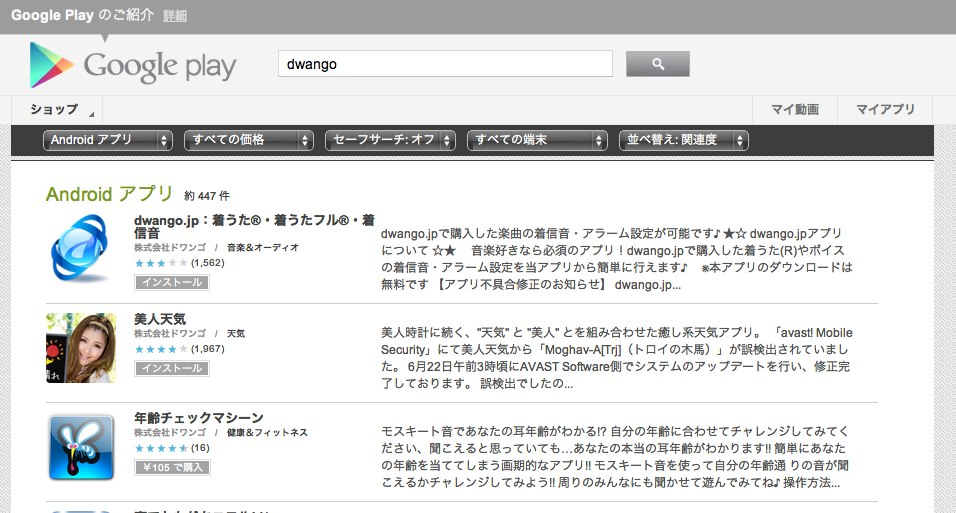
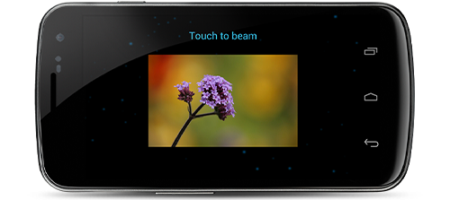

Android 4.1 Jelly Bean
アプリの暗号化
- Google Playは全ての有料アプリが端末に配信され格納される前にデバイス特有のキーでassetsの暗号化をすることでアプリケーションの保護を行う

Smart App Updates
- Smart App Updatesは デバイスのアップデートの配信をより良い方法で提供するGoogle Playの新しい機能
- デベロッパーがアップデートを公開したら、Google PlayはAPK全体ではなく、変更されたビットだけを配信する
- これは大抵の場合、アップデートの軽量化になり、ダウンロードの高速化とバッテリーのセーブ、ユーザーのモバイルデータプランの使用量を抑えることができる
- 平均してsmart app updateは全体のAPKの約1/3のサイズになる
Google Playサービス(近日公開予定)
- Google Playサービスは、Google Playを通じて配信されるアプリの中に Google+や認証のようなGoogleのサービスを統合するのに役立つ
- Google Playサービスは、エンドユーザーのデバイスに自動的に提供されるため、デベロッパーは薄いクライアントライブラリをアプリ中に含めるだけで良い
- Overview - Android - Google Developers :
https://developers.google.com/android/google-play-services/index
Google Cloud Messaging
- Google クラウドメッセージング (GCM) は同期を専有せずに、Android端末間でショートメッセージデータを送信する仕組み
- GCMはキューイングされたメッセージの詳細を扱い、ターゲットのAndroidデバイスに効果的に配信する
- メッセージのマルチキャストをサポートしており、単一リクエストにおいて1000接続まで可能
- 最大4Kまでのデータの送信が可能
- Google Cloud Messaging for Android :
http://developer.android.com/intl/ja/guide/google/gcm/index.html
Android Beam (Bluetooth)
- Bluetoothのデータ転送をテコ入れすることで、Android Beamでより簡単に画像・ビデオ・その他のペイロードをシェアすることが可能となった
- ユーザが転送のトリガを引くと、Android Beamは NFC から Bluetoothへハンドオーバーし、ある端末から別の端末へのファイル転送を簡単に行うことができる

<Thank You!>
http://sugimotoak.github.com/slide-io2012android4.1/